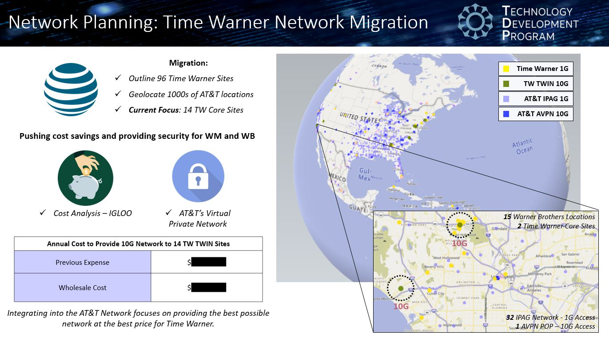
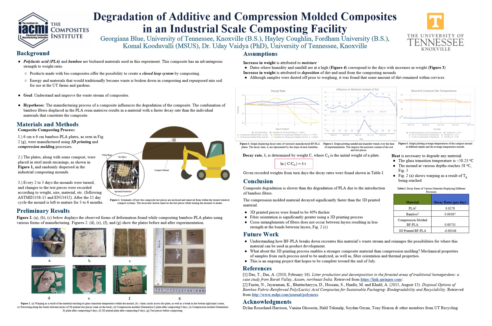

AT&T Technology Development Program - TDP Engineer I
July 2019 - current
Time Warner Network Merger Business & Data Analyst
- Leveraged AT&T’s internal mapping application to display Time Warner assets alongside AT&T’s global network presence. The intricate mapping of thousands of sites was needed to showcase AT&T’s ability to deliver to the diverse network needs of Time Warner
- Completed an iterative cost analysis to provide a foundational 1Q2020 budget for the Time Warner network migration from external network providers to AT&T, delivering a cost savings of $562,854.04
AT&T Peering Expansion Study
- Performed a complete data analysis, studying inbound and outbound peering traffic to find an opportunity for expansion of a Service Node Routing Center to a 9th national peering site
|
 |
Research Assistant at IACMI - The Composites Institute
May 2018 - Aug. 2018
- Led research studying the degradation of unique biocomposites to better understand manufacturing’s effect on waste streams and potential applications of biocomposites
- Assisted in background research and calculating the embodied energy of recycled composites
|
Publications
Calculating the Embodied Energy of Recycled Composites (Oct. 2018)
Komal Kooduvalli, Georgiana Blue, Uday Vaidya, Soydan Ozcan
Honors
CAMX 2018 Outstanding Technical Paper Award Winner – Best in Track: Green & Sustainability
|
